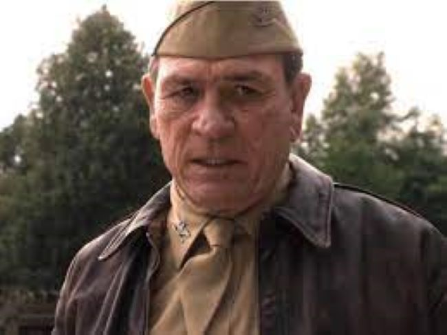
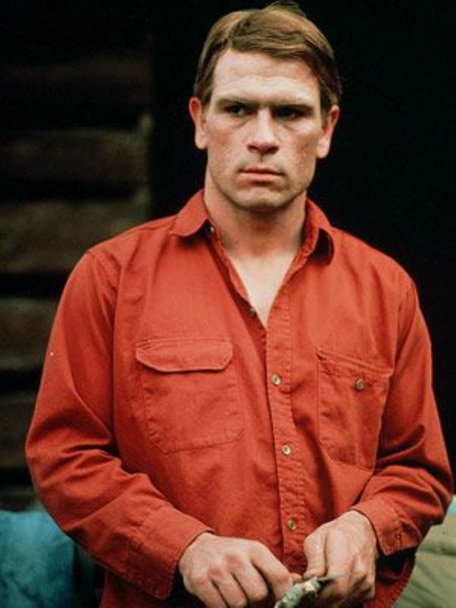
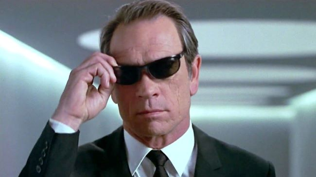
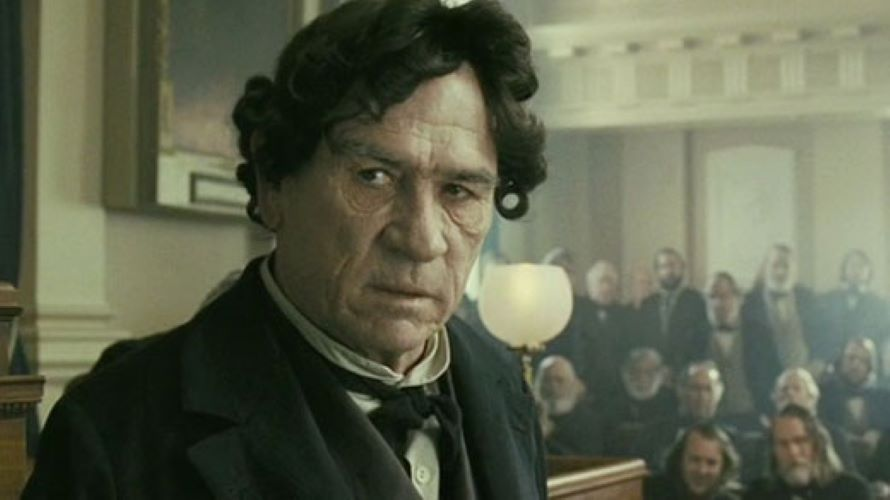
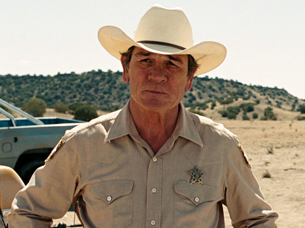

Image Gallery
Capatain America:The First Avenger 2011
Coloonel Chester Philips

Coal Miner's Daughter 1980
Doolittle Lynn

Man of the House 2005
Ranger Roland Sharp's Happy face
Men In Black 1997
Agent K "Kay"

The Executioner's Song 1982
Gary Gilmore
The Fugitive 1993
Samuel Gerard
Lincoln 2012
Thaddeus Stevens

No Country for Old Men 2007
Ed Tom Bell
